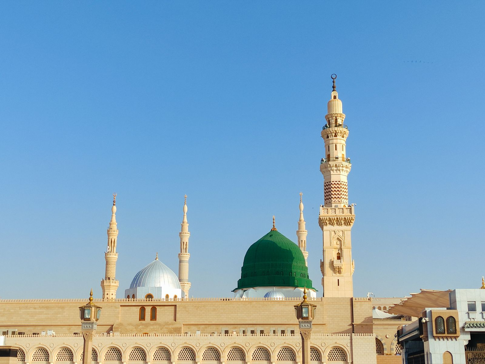

Madinah · Rawdah Permit Guide
Rawdah Permit — How to Book Your Rawdah Visit on Nusuk (Step by Step)

Inside the Prophet's Mosque in Madinah lies the Rawdah — the blessed area between the Prophet's ﷺ house and his pulpit. Entry is by permit only, the permit is free, and it is booked only through the official Nusuk app — since 31 October 2026 also on the Nusuk web portal at services.nusuk.sa. No agent can book it for you, and nobody should charge you for it. Here is the booking, step by step.
How to book — step by step:
- Step 1 — Download the official Nusuk app and sign in with your passport and visa number, exactly as they appear on your documents. Our Nusuk App Guide covers registration in detail.
- Step 2 — On the Home screen, open Rawdah, then Permits and Bookings.
- Step 3 — Choose Men or Women. The two have separate visiting times, and a permit booked under the wrong category will not scan at the door.
- Step 4 — Pick your date and time slot. Slots are grouped by prayer period — Midnight, Fajr, Dhuhr, Asr, Maghrib and Isha — and run about 20 minutes apart.
- Step 5 — Confirm the booking and save the QR code — screenshot it. Mobile signal inside the mosque can be unreliable, and your screenshot opens the gate when the app cannot load.
- Step 6 — Confirm your attendance in the app between 48 hours and 2 hours before the visit, then arrive 30 minutes early and join the queue for your slot.
When slots appear: Slots are usually released 7–14 days ahead — only 3–5 days ahead in Ramadan and Dhul-Hijjah — and they fill fast, so check the app daily once your Madinah dates are near. The general rule is one Rawdah permit every 365 days. Nusuk also offers an Instant Access option for eligible visitors who are near the Prophet's Mosque, subject to capacity on the day.
Visiting windows (published by the Saudi Press Agency on 20 October 2026): Men — 2:00 AM until Fajr, and 11:20 AM until Isha. Women — after Fajr until 11:00 AM, and after Isha until 2:00 AM. Windows can change with the season, so always follow the time shown in your Nusuk permit. While you are in the city, our Madinah Ziyarat Guide covers the other blessed places to visit.
Quick questions:
- Is the Rawdah permit free? Yes — completely free. It is booked only in the official Nusuk app or on the Nusuk web portal (services.nusuk.sa); there is no fee, and no agent or website can issue it for you.
- How often can I visit the Rawdah? The general rule is one permit every 365 days. If you are already in Madinah, the Instant Access option in Nusuk may allow an additional visit for eligible visitors near the Prophet's Mosque, subject to capacity.
- What if no slots are available? Keep checking — new slots are released 7–14 days ahead (3–5 days in Ramadan and Dhul-Hijjah) and cancellations free up places. Check daily at different times, and try Instant Access when you are near the mosque.
Sources: Nusuk — Official Site ↗ · Sahih al-Bukhari 1196 — Sunnah.com ↗ · Sahih Muslim 1391 — Sunnah.com ↗